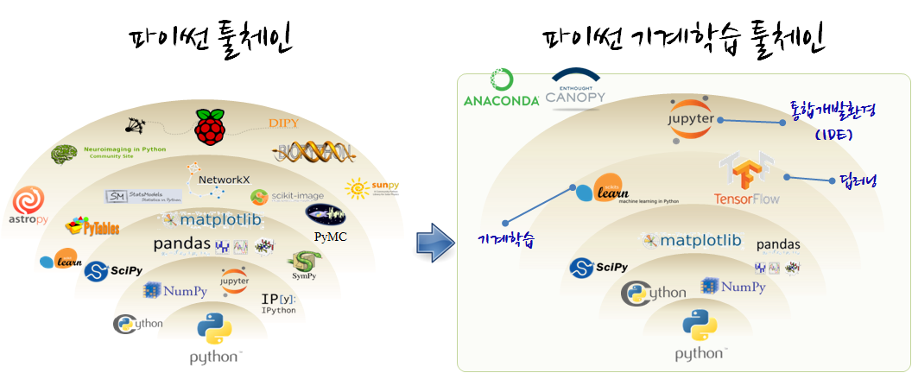

xwMOOC 기계학습
파이썬기반 기계학습 툴체인(toolchain)
학습목표
- 파이썬으로 기계학습 툴체인을 구축한다.
파이썬 기계학습 생태계 1 2
파이썬 기계학습을 위해서 먼저 언어로 파이썬이 필요하고, 데이터 처리를 위해서 넘파이(NumPy)가 필요하고, 과학컴퓨팅을 위한 기본 라이브러리를 SciPy가 지원하고, 시각화를 위해 Matplotlib 라이브러리가 필요하다. 물론, 그 하단에는 C/C++, 포트란 언어로 개발된 라이브러리 혹은 원시 소스코드를 컴파일해서 파이썬에서 가져다 사용할 수 있는 Cython같은 수많은 팩키지가 숨겨져 있다.

- 과학 파이썬 배포판
- 아나콘다(Anaconda): 리눅스, 윈도우, 맥
- 캐노피(Enthought Canopy): 리눅스, 윈도우, 맥
- 기타: 파이썬(x,y), 윈파이썬(WinPython), 파이조(Pyzo)
파이썬 기계학습 툴체인(toolchain) 3 4
파이썬 기계학습 툴체인은 먼저 유닉스 쉘 명령라인 인터페이스에서 시작하고, 외부 데이터를 가져오면 파이썬 판다스(pandas) 팩키지를 통해 데이터 정제 작업을 진행하고 나서, 데이터 과학자 사람을 위한 시각화로 Matplotlib, 기계를 위한 Scikit-learn, TensorFlow를 연결하여 사용한다.

그외 파이썬 기계학습 라이브러리
- 데이터 전처리
- 강화학습
- 웹마이닝
- 토픽 모형개발 : gensim
- 단어구름: pytagcloud